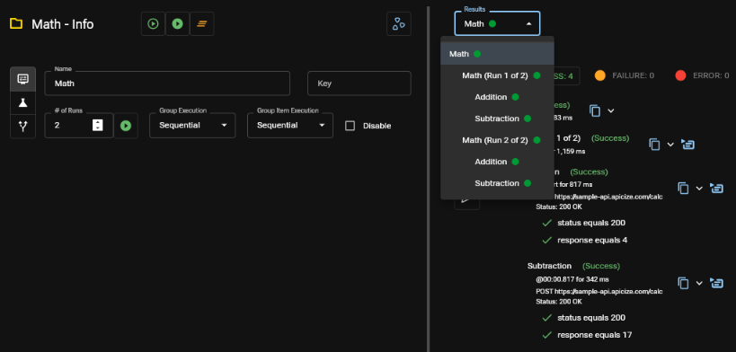

Running Tests
To dispatch Request or Group request and execute its tests, first select it.
To execute the Request or Group once, with no timeout, click the Single Run button (outlined "play") next to the name at the top of the screen, or press Ctrl + Enter.
Runnig a request without a timeout can be useful when interactively debugging a local API.
If you want to execute the Request or Group with for the specified number of groups, click on the Test button (filled "play"), or press Ctrl + Shift + Enter .
Apicize will dispatch your request, execute test scripts (if any) and display the results.
Multiple Runs and Execution
Apicize can execute your Request or Group multiple times, and tests tests can be executed Concurrently or Sequentially. Conccurent attempts are dispatched at the same time, and can be useful to test scalability and making sure your API returns consistent results when concurrent calls are made. Sequential attempts are dispatched one after the other.
If you are testing a Group, there are two Execution settings:
- Group Execution controls how multiple runs are dispatched at the group level. If you select Concurrent, all runs of the Group (and its children) will be dispatched at the same time.
- Group Item Execution controls how each of the children in a group are dispatched. If you select Concurrent, all children of the Group will be dispatched at the same time. If you have Requests in a group that rely upon variables set in a previous Request (see Authoring Tests), then Concurrent Group Item Execution will likely break these tests.
Use Sequential Group Item Execution for a Group when outputing values from a Request's test to be used by subsequent Requests
Data Sets
You can maintain them in a JSON or CSV file separate from your workbook. This may be useful if you have a large set of test cases that you want to maintain outside of Apicize. Data Sets can be used from the Apicize CLI runner.
Some things to keep in mind when using Seeded data:
- Each row will be executed sequentially for Requests and Groups being tested. The specified number of runs, concurrency, etc. will all be applied
- As a security measure, the Seed file must be in the same directory or child directory as the workbook.
- When using a JSON file, if the file contains a scalar value (string, number, etc.) or ab array of scalar values, a variable named data will be set.
- Although you can set a Seeded file for any request or group (as well as the Workspace itself), only one Seed file can be active at any time. There is no support for "nested" seed files. This means that once a Seed file is loaded for a workbook or group, any Data Set configured for child groups or requests will be ignored.
Viewing Results
After a request is processed, the test flask icon will be colored:
- Green: A response was received for request(s) and all tests pass
- Yellow: A response was received for request(s) but one or more tests failed
- Red: A response was not received
Group Results
If you are testing from a group, the Test panel will include up to two drop downs after the group's requests and tests are run. If your group specified a multiple number of runs, you can specify which run sequence to view. By default, a summary of all request and test results in the group will is displayed. You can see the details of a specific request and its test by selecting the test from the Results dropdown.

Request Results
Each request includes the following information panels:
- Headers: displays the headers returned with the response
- Raw: Displays the response body (if any) as text if the content type does not appear to be binary. If the content type does appear to be binary, then the body's content encoded as Base64 will be displayed
- Preview: For recognized content types, textual will be displayed "pretty-fied" and images will be displayed as images
- Request: Information about how the request was dispatched, including any values substituted based upon the selected scenario